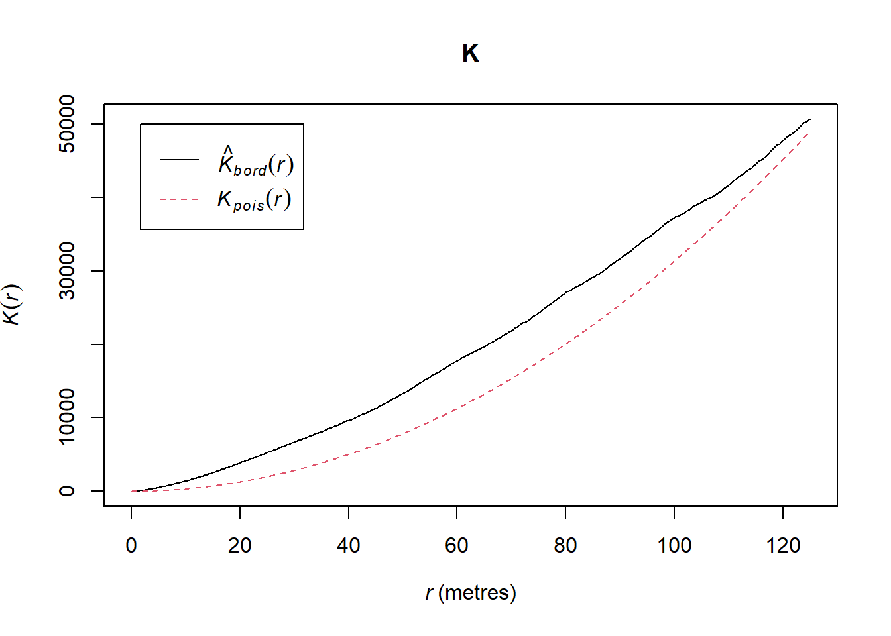
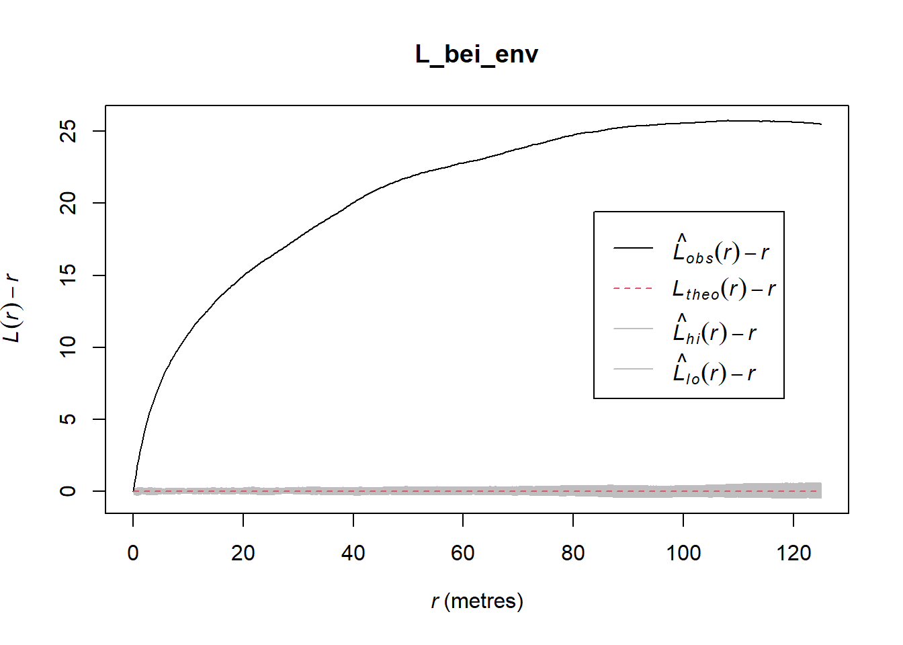
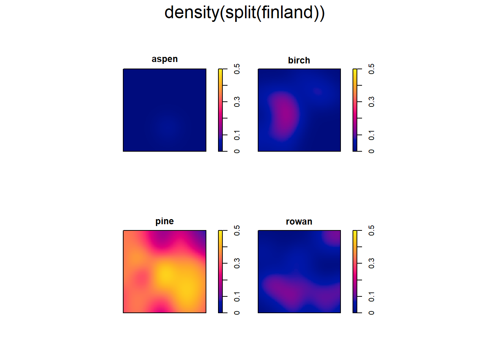
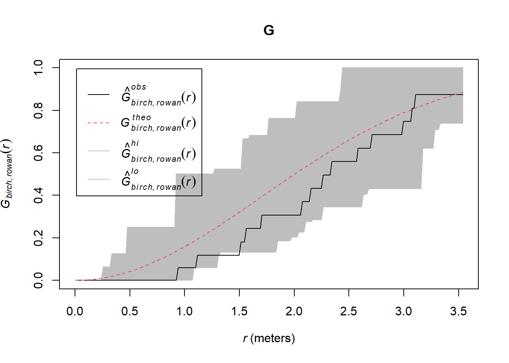

#install.packages("spatstat") (sólo si no está ya instalado)
library(spatstat)8 Análisis de patrón de puntos en R
8.1 Introducción
Como vimos en clase, un conjunto de datos de patrones de puntos contiene una serie de eventos (es decir, objetos de interés) que ocurren en una región de estudio definida. Estos eventos pueden representar cualquier cosa con una ubicación medible, incluyendo árboles, nidos de animales, ubicaciones de estaciones meteorológicas, ocurrencias de delitos, etc. sin que exista necesariamente una variable de interés. Es decir, lo que nos interesa es la ubicación de los eventos más que su valor.
Como hemos visto, los patrones de puntos tienen propiedades de primer orden, que están relacionadas con la intensidad (es decir, la densidad) de los sucesos en la región de estudio, y propiedades de segundo orden, que están relacionadas con la dependencia espacial (es decir, la disposición espacial) de los sucesos en la zona de estudio.
Objetivo
El objetivo del lab de hoy es aprender algunos enfoques estadísticos espaciales para caracterizar las propiedades de primer y segundo orden de un patrón de puntos.
Datos y librerías
Para realizar un análisis de patrón de puntos utilizaremos fundamentalmente el paquete de R spatstat. Lo primero que debemos hacer es instalarlo - a no ser que ya lo tengamos instalado - y cargarlo:
Además, vamos a utilizar tres de los datasets que vienen cargados por defecto por la librería spatstat. El primero, llamado bei, contiene la localización de 3605 árboles en una parcela de bosque tropical. Además, viene acompañado del fichero bei.extra, que contiene información continua acerca de la altitud y la pendiente en la parcela de estudio. El segundo dataset que usaremos se llama longleaf, y es un fichero de patrón de puntos “marcado”, es decir que contiene la localización de una serie de pinos de Virginia (longleaf pine), una especie común en el sudeste de EEUU, pero también contiene su diámetro, por eso decimos que es un fichero “marcado”. Finalmente, el fichero llamado lansing contiene la ubicación de una serie de 5 especies de árboles en una parcela de Lansing, en el estado de Michigan.

NOTA: al plotear los ficheros precargados del paquete spatstat podemos definir algunos parámetros de los puntos, como hacemos con un scatterplot normal. En este caso hemos modificado el tipo de puntos, su tamaño y el color, mediante los comandos pch ,cex, y cols, respectivamente. Podéis encontrar más información de como modificar los parámetros de un gráfico aquí
8.2 Familiarizándose con los objetos `ppp`
El paquete spatstat usa una clase específica de objetos de R llamados ppp (planar point pattern). Los datos que vamos a usar, que se cargan automáticamente al instalar spatstat son objetos de esa clase.
Examinemos el dataset bei. Para ello devemos abrirlo tecleando:
data(bei)Y podemos ver su contenido tecleando su nombre:
beiPlanar point pattern: 3604 points
window: rectangle = [0, 1000] x [0, 500] metresVemos que es un archivo de patrón de puntos con 3604 observaciones. El objeto ppp también contiene información sobre la región que contiene los eventos. En este caso, es un rectángulo con un rango de coordenadas \(x\) de entre 0 y 1000 , y un rango de \(y\) de entre 0 y 500, y las unidades en metros.
Podemos visualizar el objeto bei escribiendo:
plot(bei)
Igual que hemos hecho hasta ahora, podemos cambiar el color, formato de los puntos, y otras características del plot
plot(bei, pch = 20, cols = "dark blue")8.3 Estadísticas descriptivas (centrografía)
Los estadísticos centrográficos son estadísticos descriptivos simples que se utilizan a menudo para el análisis exploratorio de datos en la estadística espacial. Los estadísticos centrográficos, como la posición central, la desviación estándar, la elipse de desviación estándar pueden utilizarse para ayudar a la caracterización de la distribución espacial de los conjuntos de datos referenciados espacialmente.
En \(R\) podemos calcular por ejemplo la posición media y mediana de los puntos, lo haremos con el dataset bei:
x_media <- mean(bei$x)
y_media <- mean(bei$y)
x_mediana <- median(bei$x)
y_mediana <- median(bei$y)y representarlo gráficamente sobre los puntos:
plot(bei, pch = 20, cex = 0.5)
points(x_media, y_media, col = "red", pch = 3, lwd=2)
points(x_mediana, y_mediana, col = "green", pch = 4, lwd= 2)También podemos calcular la desviación estándard y usarla para construir un círculo con ese radio:
x_sd <- sd(bei$x)
y_sd <- sd(bei$y)
sd_bei = mean(x_sd, y_sd)Y plotearlo, pero para dibujar un círculo necesitamos la función draw.circle() del paquete plotrix:
library(plotrix)
plot(bei, pch = 20, cex = 0.5)
points(x_media, y_media, col = "red", pch = 3, lwd=2)
draw.circle(x= x_media, y = y_media, border = "red",
radius = sd_bei, lwd = 2)En ArcGis Pro y QGis también existen funciones para realizar este tipo de análisis y visualización. En concreto, podemos usar las funciones mean center, o standard distance dentro del toolbox Spatial Statistics. Incluso podemos dibujar la elipse de desviación estandard mediante la función directional distribution.
8.4 Análisis basados en densidad
8.4.1 Intensidad global
Como hemos visto en la teoría, la intensidad de un proceso expresado en patrón de puntos puede calcularse a través de la siguiente ecuación:
\(\lambda = {n}/{a}\)
donde \(\lambda\) es la intensidad, \(n\) es el número de observaciones y \(a\) la superficie considerada como área de estudio. Conociendo estos dos parámetros podemos calcular la intensidad:
El número de observaciones es un parámetro del objeto ppp:
n_obs <- bei$ny el área lo podemos obtener también de un objeto ppp:
bei$windowwindow: rectangle = [0, 1000] x [0, 500] metressuperf <- area(bei$window)
superf[1] 5e+05Por tanto la intensidad será:
intens_bei <- n_obs / superf
intens_bei[1] 0.007208Sin embargo, spatstat ya proporciona una función summary() que nos proporciona información de la muestra, entre ella la intensidad:
summary(bei)Planar point pattern: 3604 points
Average intensity 0.007208 points per square metre
Coordinates are given to 1 decimal place
i.e. rounded to the nearest multiple of 0.1 metres
Window: rectangle = [0, 1000] x [0, 500] metres
Window area = 5e+05 square metres
Unit of length: 1 metreTambién podemos acceder a la intensidad de forma directa:
summary(bei)$intensity[1] 0.0072088.4.2 Análisis de cuadrículas
Calcular la intensidad global de un proceso de puntos puede tener interés para comparar dos muestras diferentes, o cambios temporales, pero para caracterizar de forma más completa la muestra debemos determinar cómo varía la intensidad en el espacio. Una forma sencilla es a través del conteo por cuadrículas. Consiste en dividir el área de estudio en una serie de cuadrículas de tamaño constante, y calcular la intensidad en cada una de ellas. El resultado nos puede ayudar a determinar si el patrón de eventos está distribuido regularmente o de manera agrupada. spatstat contiene una función (quadratcount()) que nos permite calcularlo de manera muy sencilla.
q <- quadratcount(bei, nx= 4, ny = 4)
q x
y [0,250) [250,500) [500,750) [750,1e+03]
[375,500] 368 506 64 287
[250,375) 298 171 66 194
[125,250) 324 27 54 178
[0,125) 220 138 589 120También podemos visualizarlo:
plot(bei, cols = "gray", pch = 20, cex = 0.5)
plot(q, add = T)En las sesiones teóricas vimos que la hipótesis nula en el caso de una distrbución de puntos es que estos se encuentran repartidos aleatoriamente en las cuadrículas. Sabiendo la intensidad de la muestra, podemos generar una serie de puntos aleatorios, que sigan una distribución de Poisson. Este numero de eventos, que sería el esperado en una muestra que cumpla la aleatoriedad, se compara con lo que realmente tenemos (observado) mediante un test de Chi-cuadrado, que en spatstat viene implementado en la función quadrat.test(), que se puede usar con el objeto ppp o con el resultado de quadratcount():
quadrat.test(bei, nx= 4, ny = 4)
Chi-squared test of CSR using quadrat counts
data: bei
X2 = 1754.6, df = 15, p-value < 2.2e-16
alternative hypothesis: two.sided
Quadrats: 4 by 4 grid of tilesquadrat.test(q)
Chi-squared test of CSR using quadrat counts
data:
X2 = 1754.6, df = 15, p-value < 2.2e-16
alternative hypothesis: two.sided
Quadrats: 4 by 4 grid of tilesEn este caso, vemos que el p-valor es claramente inferior a 0.05, por lo que podemos rechazar la hipótesis nula, y por tanto decidir que los puntos no se distribuyen aleatoriamente. También podemos ver este resultado de manera gráfica:
plot(quadrat.test(bei, nx = 4, ny = 4))Podemos por supuesto cambiar el número de cuadrículas a nuestro antojo:
Q9 <- quadratcount(bei, nx = 3, ny = 3)
plot(bei, cex = 0.5, pch = "+")
plot(Q9, add = TRUE, cex = 2)quadrat.test(Q9)
Chi-squared test of CSR using quadrat counts
data:
X2 = 1166.1, df = 8, p-value < 2.2e-16
alternative hypothesis: two.sided
Quadrats: 3 by 3 grid of tilesQ24 <- quadratcount(bei, nx = 6, ny = 4)
plot(bei, cex = 0.5, pch = "+")
plot(Q24, add = TRUE, cex = 1.5)quadrat.test(Q24)
Chi-squared test of CSR using quadrat counts
data:
X2 = 2222, df = 23, p-value < 2.2e-16
alternative hypothesis: two.sided
Quadrats: 6 by 4 grid of tilesQ120 <- quadratcount(bei, nx = 10, ny = 12)
plot(bei, use.marks = F, cex = 0.5, pch = "+")
plot(Q120, add = TRUE, cex = 0.8)quadrat.test(Q120)
Chi-squared test of CSR using quadrat counts
data:
X2 = 3558.8, df = 119, p-value < 2.2e-16
alternative hypothesis: two.sided
Quadrats: 10 by 12 grid of tilesTambién podemos calcular la densidad de puntos en cada cuadrado, en vez del número total:
q_dens <- intensity(Q9)
q_dens x
y [0,333) [333,667) [667,1e+03]
[333,500] 0.017010 0.004230 0.006714
[167,333) 0.008478 0.001242 0.004932
[0,167) 0.006570 0.008964 0.006732Y plotearlo:
plot(intensity(Q9, image=TRUE))
plot(bei, use.marks = F, pch=20, add=TRUE) 8.4.3 Análisis de cuadrículas basadas en covariable
A menudo, más que dividir el terreno en un número de cuadrículas regulares, nos interesa dividirlo según alguna variable continua de interés, que pensemos que puede explicar la distribución. Ya comentamos que spatstat proporciona, junto con el dataset bei, otro llamado bei.extra que contiene los valores de altitud y pendiente en la misma parcela. Echémosles un vistazo:
bei.extraList of pixel images
elev:
real-valued pixel image
101 x 201 pixel array (ny, nx)
enclosing rectangle: [-2.5, 1002.5] x [-2.5, 502.5] metres
grad:
real-valued pixel image
101 x 201 pixel array (ny, nx)
enclosing rectangle: [-2.5, 1002.5] x [-2.5, 502.5] metresplot(bei.extra$elev)plot(bei.extra$grad)Veamos como se distribuyen los puntos en clases de pendiente. Para ello debemos reclasificar el raster de elevaciones en 5 clases: <130, 130 a 140, de 140 a 150, de 150 a 160, y >160. Para ello usaremos la función cut():
plot(bei.extra$elev)
clases_elev <- cut(bei.extra$elev, breaks = c( -Inf, 130, 140, 150, 160 , Inf),
labels=1:5) # Classify the raster
plot(clases_elev)Interpreting pixel values as colours (valuesAreColours=TRUE)Ahora usamos de nuevo la función quadratcount. pero indicando que queremos “teselar” por las clases de elevación:
Q_tes <- quadratcount(bei, tess = clases_elev)
I_tes <- intensity(Q_tes) # Compute density
I_testile
1 2 3 4
0.002415371 0.006514200 0.008701685 0.005409613 Estos números son el número de puntos por metro cuadrado en cada clase de elevación. Podemos visualizarlo como antes:
plot(intensity(Q_tes, image=TRUE))
plot(bei, pch=20, add=TRUE)Y también podemos realizar un test estadístico de este conteo:
quadrat.test(Q_tes)
Chi-squared test of CSR using quadrat counts
data:
X2 = 232.08, df = 3, p-value < 2.2e-16
alternative hypothesis: two.sided
Quadrats: 4 tiles (levels of a pixel image)8.4.4 Densidad en kernel
El recuento de cuadrículas es útil para caracterizar la intensidad de un proceso puntual no homogéneo, pero tiene sus limitaciones:
- La elección del origen, la orientación de las cuadrículas y el tamaño de los mismos afecta a la distribución de frecuencias observada, y no deja de ser una decisión arbitraria.
- Se pierde una cantidad significativa de información de detalle
Para evitar el problema podemos hacer un análisis mediante algoritmos KDE (kernel density estimation), que utilizan un enfoque de ventana móvil para caracterizar la intensidad. Este enfoque tiende a preservar una mayor cantidad de detalles espaciales y no sufre tanto por la elección del origen, la orientación y el tamaño de las cuadrículas.
El paquete spatstat tiene una función (density) que calcula un kernel a partir del patrón de puntos, y determina la densidad de puntos de cada celda del área de estudio según ese kernel.
K1 <- density(bei)
plot(K1)Para mejorar la visualización podemos añadirles las isolíneas de densidad, y los puntos, para comprobar el resultado:
plot(K1)
contour(K1, add=TRUE)
plot(bei, pch=20, add=TRUE)El ancho de banda (es decir, el radio) de la función kernel se define automáticamente en función del área de estudio, pero se puede personalizar también, usando el parámetro sigma:
K2 <- density(bei, sigma=200)
plot(K2, main=NULL)
contour(K2, add=TRUE)
plot(bei, pch=20, add=TRUE)Antes hemos visto cómo crear cuadrículas en función de los valores de una covariable. Podemos aprovechar las funcionalidades de los cálculos de intensidad con kernel para determinar de manera directa si la intensidad de un proceso de patrón de puntos depende de alguna covariable. Podemos usar la función rhohat(), indicando qué dataset queremos analizar, y con qué variable se quiere evaluar:
rhohat(bei, bei.extra$grad)Intensity function estimate (class rhohat) for the covariate X
Function values are absolute intensities
Type of estimate: Smooth function of covariate
Estimation method: ratio of fixed-bandwidth kernel smoothers
Actual smoothing bandwidth sigma = 0.010347
Pointwise 95% confidence bands for rho(x)
based on asymptotic variance of rhohat(x)
Call: rhohat.ppp(bei, bei.extra$grad)
Function value object (class 'fv')
for the function X -> rho(X)
...........................................................................
Math.label Description
X X Covariate X
rho hat(rho)(X) Estimated intensity
ave bar(rho) Average intensity
var bold(Var)~hat(rho)(X) Variance of estimator
hi rho[hi](X) Upper limit of pointwise 95%% confidence interval
lo rho[lo](X) Lower limit of pointwise 95%% confidence interval
...........................................................................
Default plot formula: .~X
where "." stands for 'rho', 'ave', 'hi', 'lo'
Columns 'hi' and 'lo' will be plotted as shading (by default)
Recommended range of argument X: [0.00087115, 0.32846]
Available range of argument X: [0.00087115, 0.32846]La salida de la función rhohat() no es muy clara, pero podemos plotearla:
plot(rhohat(bei, bei.extra$grad))El plot es una estimación de la intensidad en función de la pendiente del terreno. Indica que es más infrecuente encontrar árboles en terrenos llanos (pendiente < 0.05) que en zonas de pendientes más altas. La linea negra \(\rho\) es la intensidad estimada, mientras que la región en gris representa el intervalo de confianza.
8.5 Análisis basados en la distancia
Los análisis basados en la distancia están relacionados con las propiedades de segundo orden de los puntos, es decir, con la dependencia espacial entre ellos. Existen varios métodos, que evaluaremos de nuevo sobre el fichero bei:
8.5.1 Vecinos más próximos (ANN)
Podemos calcular la distancia entre cada árbol y su vecino más próximo, usando nndist() y fijando k = 1 (para extraer la distancia al más próximo), y calculamos la media de todas las distancias:
dist1 <- nndist(bei, k=1)
head(dist1)[1] 0.2236068 0.9848858 3.3241540 8.0777472 5.8137767 5.9203040mean(dist1)[1] 4.329677También podemos calcularlo con el segundo vecino de cada árbol, o con el tercero, o el n-ésimo…
mean(nndist(bei, k=2))[1] 6.473149mean(nndist(bei, k=3))[1] 8.120378mean(nndist(bei, k=15))[1] 19.64182Con una función podemos calcular NN para cualquier valor de vecino deseado, y luego calcular la media:
ANN <- apply(nndist(bei, k=1:200),2,FUN=mean)Después ploteamos la distancia media al vecino k-ésimo, que nos da información sobre cómo se distribuyen los puntos.
plot(seq(1:200), ANN)8.5.2 Función \(G\) y función \(F\)
Podemos realizar un test más formal de cómo varía la distancia al vecino más próximo, usando la función G(r), que calcula la distribución acumulada de la distancia de un punto cualquiera x a su punto más próximo. El valor de \(G(r)\) es la proporción de puntos que tienen su vecino más cercano a una distancia igual o inferior a \(r\). Esta función viene implementada en spatstat como Gest():
G_bei <- Gest(bei)
plot(G_bei)El comando de arriba produce un gráfico que compara la función G observada o empírica y la esperada si la distribución fuera aleatoria (linea azul). En este caso, los valores empíricos son muy superiores, lo que indica agrupación en los puntos.
Para poder saber si las diferencias entre la función empírica y la teórica son significativas (es decir, si realmente podemos rechazar que los puntos se distribuyan al azar), podemos usar la función envelope(). Esta función genera un número de muestras con la misma cantidad de puntos pero distribución aleatoria, y compara nuestra muestra a ellas.
g_bei_env <- envelope(bei, Gest, nsim = 100)Generating 100 simulations of CSR ...
1, 2, 3, 4, 5, 6, 7, 8, 9, 10, 11, 12, 13, 14, 15, 16, 17, 18, 19, 20,
21, 22, 23, 24, 25, 26, 27, 28, 29, 30, 31, 32, 33, 34, 35, 36, 37, 38, 39, 40,
41, 42, 43, 44, 45, 46, 47, 48, 49, 50, 51, 52, 53, 54, 55, 56, 57, 58, 59, 60,
61, 62, 63, 64, 65, 66, 67, 68, 69, 70, 71, 72, 73, 74, 75, 76, 77, 78, 79, 80,
81, 82, 83, 84, 85, 86, 87, 88, 89, 90, 91, 92, 93, 94, 95, 96, 97, 98, 99,
100.
Done.plot(g_bei_env)Vemos que ahora se ha representado una banda gris alrededor de la función G teórica, que indica el intervalo de confianza generado a partir de las 100 simulaciones que hemos realizado (nsim = 100)
De manera análoga, la función F representa la frecuencia acumulada de la distancia más corta entre un punto y un conjunto de puntos aleatoriamente localizados en el área de estudio:
f_bei_env <- envelope(bei, Fest, nsim = 100)Generating 100 simulations of CSR ...
1, 2, 3, 4, 5, 6, 7, 8, 9, 10, 11, 12, 13, 14, 15, 16, 17, 18, 19, 20,
21, 22, 23, 24, 25, 26, 27, 28, 29, 30, 31, 32, 33, 34, 35, 36, 37, 38, 39, 40,
41, 42, 43, 44, 45, 46, 47, 48, 49, 50, 51, 52, 53, 54, 55, 56, 57, 58, 59, 60,
61, 62, 63, 64, 65, 66, 67, 68, 69, 70, 71, 72, 73, 74, 75, 76, 77, 78, 79, 80,
81, 82, 83, 84, 85, 86, 87, 88, 89, 90, 91, 92, 93, 94, 95, 96, 97, 98, 99,
100.
Done.plot(f_bei_env)En este caso, valores más altos que los teóricos indican patrones regulares (mayor distancia entre puntos), mientras que los más bajos indican agrupación. Como la linea observada va muy por debajo de la teórica, podemos concluir que nuestros puntos están agrupados.
8.5.3 Función \(K\) y función \(L\)
La función \(K\) calcula, para una serie de bandas concéntricas a cada punto de la muestra, el número de puntos que cae dentro de la banda. Esto nos da un valor de \(K\) para cada distancia, valor que siempre debe aumentar con la distancia. Para calcular la función \(K\) podemos usar la función de R Kest():
K <- Kest(bei)number of data points exceeds 3000 - computing border correction estimate onlyplot(K)
En este caso, la curva por encima de la teórica (Poisson) indica agrupación de puntos. Podemos calcular el intervalo de confianza igual que hemos hecho antes:
k_bei_env <- envelope(bei, Kest, nsim = 30)Generating 30 simulations of CSR ...
1, 2, 3, 4, 5, 6, 7, 8, 9, 10, 11, 12, 13, 14, 15, 16, 17, 18, 19, 20,
21, 22, 23, 24, 25, 26, 27, 28, 29,
30.
Done.plot(k_bei_env)La función \(L\), que es sólo una modificación de \(K\), se calcula fácilmente, casi de la misma manera:
L <- Lest(bei)number of data points exceeds 3000 - computing border correction estimate onlyplot(L, . -r ~ r)L_bei_env <- envelope(bei, Lest, nsim = 99)Generating 99 simulations of CSR ...
1, 2, 3, 4, 5, 6, 7, 8, 9, 10, 11, 12, 13, 14, 15, 16, 17, 18, 19, 20,
21, 22, 23, 24, 25, 26, 27, 28, 29, 30, 31, 32, 33, 34, 35, 36, 37, 38, 39, 40,
41, 42, 43, 44, 45, 46, 47, 48, 49, 50, 51, 52, 53, 54, 55, 56, 57, 58, 59, 60,
61, 62, 63, 64, 65, 66, 67, 68, 69, 70, 71, 72, 73, 74, 75, 76, 77, 78, 79, 80,
81, 82, 83, 84, 85, 86, 87, 88, 89, 90, 91, 92, 93, 94, 95, 96, 97, 98,
99.
Done.plot(L_bei_env, . -r ~ r)
8.5.4 Función de correlación de pares
La función de correlación de pares no es más que una version modificada de K en la que se hacen bandas anulares concéntricas.
pcf_bei <- pcf(bei)
plot(pcf_bei)pcf_bei_env <- envelope(bei, pcf, nsim = 10)Generating 10 simulations of CSR ...
1, 2, 3, 4, 5, 6, 7, 8, 9,
10.
Done.plot(pcf_bei_env)8.6 Análisis de patrones de puntos “marcados”
Como vimos en la sesión teórica, un dataset de patrón de puntos contiene una serie de eventos, que son los objetos de interés (árboles, muestras de suelo, nidos, crímenes). Sin embargo a menudo estos puntos llevan asociada alguna variable de interés, que puede ser numérica (diámetro, pH del suelo…) o categórica (especie, tipo de suelo…). Estas variables se llaman marcas y los objetos que contienen puntos con marcas asociadas se llaman patrones de puntos marcados.
Recordemos que los patrones de puntos tienen propiedades de primer orden, relacionadas con la intensidad (o densidad) de eventos a lo largo y ancho del área de estudio, y propiedades de segundo orden, que hacen referencia a la dependencia espacial entre los eventos.
Al entrar en juego las marcas, el tipo de preguntas que nos podemos hacer cuando tenemos puntos marcados es variado. Por ejemplo: ¿están relacionadas las ocurrencias de un tipo de evento (por ejemplo, una especie) con las de otro? La distribución de uno de los tipos de evento explica la de otro?
Ahora veremos cómo calcular modelos dependientes de la densidad (mediante kernel) para puntos con diferentes marcas, así como las variantes de los principales métodos dependientes de la distancia (funciones \(F\), \(G\), \(K\) y \(L\)). Pero antes, veamos algo más sobre los ficheros de patrón de puntos marcados:
8.6.1 Marcas numéricas
Las marcas de un fichero de patrón de puntos pueden ser de tipo numérico o categórico. Si recordamos del inicio, el fichero longleaf contiene valores de diámetro de los árboles, y R ya nos indica que contiene marcas numéricas:
longleafMarked planar point pattern: 584 points
marks are numeric, of storage type 'double'
window: rectangle = [0, 200] x [0, 200] metresAdemás, ahora podemos acceder a los valores de las marcas dentro de longleaf:
longleaf$marks [1] 32.9 53.5 68.0 17.7 36.9 51.6 66.4 17.7 21.9 25.7 25.5 28.3 11.2 33.8 2.5
[16] 4.2 2.5 31.2 16.4 53.2 67.3 37.8 49.9 46.3 40.5 57.7 58.0 54.9 25.3 18.4
[31] 72.0 31.4 55.1 36.0 28.4 24.8 44.1 50.9 47.5 58.0 36.9 65.6 52.9 39.5 42.7
[46] 44.4 40.3 53.5 44.2 53.8 38.0 48.3 42.9 40.6 34.5 45.7 51.8 52.0 44.5 35.6
[61] 19.2 43.5 33.7 43.3 36.6 46.3 48.3 20.4 40.5 44.0 40.9 51.0 36.5 42.1 15.6
[76] 18.5 43.0 28.9 21.3 30.9 42.7 37.6 47.1 44.6 44.3 26.1 25.9 41.4 59.5 26.1
[91] 11.4 33.4 35.8 54.4 33.6 35.5 7.4 36.6 19.1 34.9 37.3 16.3 39.1 36.5 25.0
[106] 46.8 18.7 23.2 20.4 42.3 38.1 17.9 39.7 14.5 33.5 56.0 66.1 26.3 44.8 24.2
[121] 39.0 15.1 35.6 21.6 17.2 22.3 18.2 55.6 23.3 27.0 50.1 45.5 47.2 37.8 31.9
[136] 38.5 23.8 46.3 2.8 3.2 5.8 3.5 2.3 3.8 3.2 4.4 3.9 7.8 4.7 4.8
[151] 44.1 51.5 51.6 33.3 13.3 5.7 3.3 45.9 32.6 11.4 9.1 5.2 4.9 42.0 32.0
[166] 32.8 22.0 20.8 7.3 3.0 2.2 2.2 2.2 59.4 48.1 51.5 50.3 2.9 19.1 15.1
[181] 21.7 42.4 40.2 37.4 40.1 39.5 32.5 39.5 35.6 44.1 42.2 39.4 35.5 39.1 9.5
[196] 48.4 31.9 30.7 15.0 24.5 15.0 22.2 27.5 10.8 26.2 10.2 18.9 44.2 13.8 16.7
[211] 35.7 12.1 35.4 32.7 30.1 28.4 16.5 12.7 5.5 2.5 3.0 3.2 3.2 4.0 3.6
[226] 3.8 4.3 3.3 6.3 18.4 5.4 5.4 26.0 22.3 35.2 24.1 6.9 61.0 20.6 6.5
[241] 2.8 4.8 5.4 4.3 4.0 3.2 2.8 4.9 3.5 2.9 2.4 3.3 2.1 2.0 3.9
[256] 5.0 2.3 2.2 67.7 2.9 2.4 56.3 39.4 59.5 42.4 63.7 66.6 69.3 56.9 23.5
[271] 9.1 29.9 14.9 38.7 31.5 27.8 28.5 21.6 2.0 2.6 2.3 3.5 3.6 2.6 2.0
[286] 2.0 2.7 2.6 2.2 2.7 30.1 16.6 10.4 11.8 32.3 33.5 30.5 10.5 13.8 22.8
[301] 31.7 10.1 14.5 12.0 2.2 2.3 3.2 3.0 50.6 2.6 50.0 52.2 5.2 5.2 6.7
[316] 14.0 12.7 59.5 52.0 45.9 18.0 43.5 3.3 4.3 7.4 10.1 23.1 8.1 5.7 13.3
[331] 12.8 11.6 6.3 20.0 8.9 27.6 4.5 9.2 2.3 5.0 4.0 21.8 10.9 14.9 45.0
[346] 16.4 43.3 55.6 10.6 45.9 45.2 35.5 43.6 44.6 38.8 34.9 17.0 50.4 2.0 33.8
[361] 51.1 21.8 46.5 5.6 19.6 32.3 3.7 2.7 2.5 2.5 2.4 7.2 7.0 11.8 8.5
[376] 9.5 7.0 10.5 6.6 6.6 8.8 11.6 48.2 36.2 44.9 43.0 37.5 31.5 39.9 35.5
[391] 51.7 36.5 40.2 7.8 17.0 36.4 19.6 15.0 28.8 20.1 39.3 37.9 40.6 33.0 35.7
[406] 20.6 22.0 16.3 5.6 7.4 42.3 43.8 53.0 48.1 41.9 48.0 75.9 40.4 40.9 39.4
[421] 40.9 17.6 17.8 3.7 19.0 11.2 27.6 14.5 34.4 20.0 2.9 7.3 52.7 8.7 3.6
[436] 4.6 11.4 11.0 18.7 5.6 2.1 3.3 11.5 2.6 4.4 18.3 7.5 17.2 4.6 32.0
[451] 56.7 46.0 7.8 54.9 45.5 9.2 13.2 15.3 8.5 2.2 58.8 47.5 52.2 56.3 39.8
[466] 38.1 38.9 9.7 7.4 22.1 16.9 5.9 10.5 9.5 45.9 11.4 7.8 14.4 8.3 30.6
[481] 44.4 38.7 41.5 34.5 31.8 39.7 23.3 37.7 43.0 39.2 40.4 36.7 48.4 27.9 46.4
[496] 38.5 39.4 50.0 51.6 38.7 39.6 29.1 44.0 50.9 50.8 43.0 44.5 29.8 44.3 51.2
[511] 37.7 36.8 33.6 47.9 32.0 40.3 42.5 59.7 44.2 30.9 39.5 48.7 32.8 47.2 42.1
[526] 43.8 30.5 28.3 10.4 15.0 7.4 15.3 17.5 5.0 12.2 9.0 2.4 13.7 13.1 12.8
[541] 27.0 2.6 4.9 35.0 23.7 42.9 14.2 3.3 28.4 10.0 6.4 22.0 4.3 10.0 9.2
[556] 3.7 66.7 68.0 23.1 5.7 11.7 40.4 43.3 60.2 55.5 54.1 22.3 21.4 55.7 51.4
[571] 23.9 5.2 7.6 27.8 49.6 51.0 50.7 43.4 55.6 4.3 2.5 23.5 8.0 11.7Y si ploteamos:
plot(longleaf)Vemos que por defecto, el tamaño de los círculos es proporcional a la variable de “marca”, en este caso el diámetro. Podemos cambiar este comportamiento por defecto marcando la opción use.marks a FALSE
plot(longleaf, use.marks = FALSE)Aunque se pueden realizar algunos cálculos con ficheros ppp con marcas numéricas, en realidad esto cae más dentro del campo de la autocorrelación espacial, por lo que no lo trataremos aquí.
8.6.2 Marcas categóricas
El segundo tipo de marcas posible que podemos encontrar son las marcas categóricas. Es el caso del fichero lansing:
lansingMarked planar point pattern: 2251 points
Multitype, with levels = blackoak, hickory, maple, misc, redoak, whiteoak
window: rectangle = [0, 1] x [0, 1] units (one unit = 924 feet)head(lansing$marks)[1] blackoak blackoak blackoak blackoak blackoak blackoak
Levels: blackoak hickory maple misc redoak whiteoakplot(lansing)Por defecto nos separa los distintos niveles de la marca (en este caso la especie) mediante símbolos, pero podemos modificarlo:
plot(lansing, cex = 0.7, pch = 21, bg = c("red", "purple", "green", "blue", "orange", "yellow"))También podemos obviarlo con la opción use.marks = FALSE
plot(lansing, use.marks = FALSE, pch =19, cex = 0.5)8.6.3 Crear objetos ppp con marcas
Como hemos comentado, las funciones con las que trabajaremos no utilizan ninguno de los formatos de ráster o vectorial que conocemos, sino que utilizan objetos de clase ppp (planar point pattern). Los datasets que usaremos ya vienen en este formato, pero esto no es lo habitual, por lo que en esta sección veremos cómo generar objetos de este tipo a partir de datasets normales.
Un objeto ppp contiene las coordenadas de los puntos y una”ventana” de análisis (área de estudio). Vamos a cargar los datos ya en el formato necesario. En este caso cargaremos los puntos de un fichero separado por comas disponible en el campus virtual, y llamado finland.csv, que contiene la ubicación de árboles de 4 especies en una parcela de 20x20 m en Finlandia.
finland_trees <- read.csv("./data/finland/finland.csv")Podemos ver que el objeto finland_trees tiene 3 columnas, una contiene las coordenadas X, otra las Y, y el tercero contiene la especie de cada árbol. Podemos observarlo mediante:
head(finland_trees) x y species
1 1.9119408 19.52381 pine
2 1.1462073 18.29303 pine
3 0.4761905 16.76923 pine
4 3.5391237 19.11355 pine
5 2.7255319 17.82417 pine
6 2.2469492 16.24175 pinePara crear un objeto ppp necesitamos usar la función ppp(). Si miramos la ayuda de la función (?ppp) vemos que esta función requiere 4 tipos de información: las coordenadas X, las Y, el tamaño de la “ventana” (la región a estudiar) y las marcas, si es que las hay (los valores asociados a cada evento). Vamos a crear un objeto ppp a partir de finland_trees:
finland <- ppp(x = finland_trees$x, y = finland_trees$y,
window = owin(c(0,20), c(0,20), unitname = "meters"),
marks = factor(finland_trees$species))Con el código de arriba definimos las coordenadas x e y para el objeto ppp a partir de las columnas del data frame. La parte del código que dice window = owin define el rango de x e y alrededor de los puntos, y el comando marks = define los valores de las marcas, aunque esto último es opcional.
8.6.4 Análisis exploratorio/descriptivo
¿Cuántos eventos tiene el dataset finland? ¿Cuál es el área de estudio? ¿Cuántas especies diferentes contiene la parcela? ¿Cuál es la densidad relativa de cada una de ellas?
Las dos primeras son preguntas que ya sabemos responder de ejercicios anteriores. Sin embargo ahora vemos que la función summary() nos devuelve información por marcas:
summary(finland)Marked planar point pattern: 168 points
Average intensity 0.42 points per square meters
Coordinates are given to 15 decimal places
Multitype:
frequency proportion intensity
aspen 1 0.005952381 0.0025
birch 17 0.101190500 0.0425
pine 128 0.761904800 0.3200
rowan 22 0.130952400 0.0550
Window: rectangle = [0, 20] x [0, 20] meters
Window area = 400 square meters
Unit of length: 1 metersDel mismo modo, el plot “normal” puede resultar confuso, pero podemos pedirle que nos represente la distribución de cada tipo de evento (en este caso, cada especie):
plot(finland)plot(split(finland))8.6.5 Efectos de primer orden (dependientes de la densidad)
Vamos a ajustar un análisis de densidad en kernel (ventana móvil para las especies diferentes de las contenidas en nuestra muestra). En realidad es muy sencillo, aprovechando la función split() que hemos visto antes:
plot(density(split(finland)))La proporción relativa de la intensidad de cada especie se puede calcular, para hacer que las intensidades estén todas en la misma escala y se puedan comparar los valores:
plot(relrisk(finland), zlim = c(0, 1))Warning: Negative Likelihood Cross-Validation criterion was minimised at
left-hand end of interval [0.155, 7.07]; use arguments 'hmin', 'hmax' to
specify a wider interval for bandwidth 'sigma'Warning: Numerical underflow detected: sigma is probably too small
Ahora los valores son más comparables entre especies, y vemos de manera muy clara la abundancia de pinos, y los pocos chopos (aspen) que hay. Basado en los mapas de densidad, ¿véis alguna especie que se asocie con otra? ¿Y algún tipo de proceso de segregación entre especies?
8.6.6 Efectos de segundo orden (dependientes de la distancia)
Igual que en los eventos de puntos sin marcas, podemos testar las asociaciones entre los distintos tipos de eventos de manera más formal mediante las funciones \(G\), \(F\), \(K\) y \(L\). Para cada una de las funciones vistas antes (Gest, Fest, Kest y Lest) existe su variante de tipo cruzado (cross-type), que compara las distribuciones para dos valores de la variable de marca.
Por ejemplo, para correr un análisis de función G y ver si hay indepencia entre las ubicaciones de pinos y abedules podemos hacer:
plot(Gcross(finland, i = "birch", j = "rowan"))La interpretación es similar a la que hemos visto hasta ahora, de manera que los valores por debajo de la curva teórica indica segregación entre las especies, mientras que valores por encima indican agrupación.
Nótese que debemos especificar los niveles de la muestra a comparar, si no tomará por defecto los dos primeros (ya que las comparaciones sólo pueden hacerse dos a dos)
También podemos construir los intervalos de confianza de manera análoga:
G <- envelope(finland, Gcross, i= "birch", j = "rowan",
nsim = 10)Generating 10 simulations of CSR ...
1, 2, 3, 4, 5, 6, 7, 8, 9,
10.
Done.plot(G)
El resto de funciones asociadas a las propiedades de segundo orden pueden construirse de forma análoga:
# Función K
K <- envelope(finland, Kcross, i= "birch", j = "rowan",nsim = 10)Generating 10 simulations of CSR ...
1, 2, 3, 4, 5, 6, 7, 8, 9,
10.
Done.plot(K)
# Función L
L <- envelope(finland, Lcross, i= "birch", j = "rowan", nsim = 10)Generating 10 simulations of CSR ...
1, 2, 3, 4, 5, 6, 7, 8, 9,
10.
Done.plot(L)# Función de correlación de pares
plot(pcfcross(finland))8.7 Conclusiones
Hemos visto como analizar patrones de puntos tanto univariantes como multivariantes (con varios niveles), de manera que hemos aprendido a determinar si la distribución de una serie de puntos es aleatoria, agrupada o dispersa, y a comparar las distribuciones de dos especies mediante diversos estadísticos. Por supuesto, esto es sólo la punta del iceberg de la potencialidad de este tipo de análisis, pero supone una buena base que podemos utilizar para analizar diferentes tipos de datos.